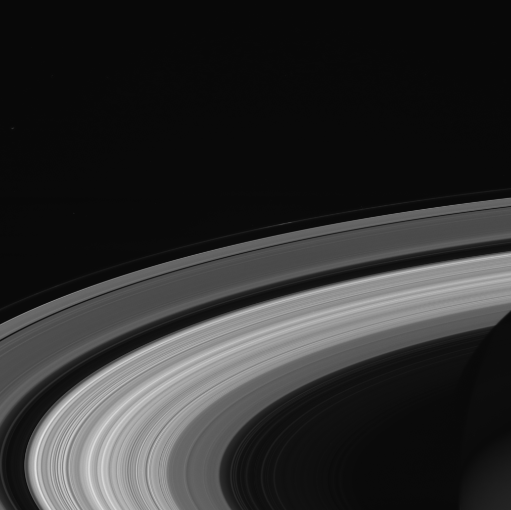

Saturn's rings are made of rocks, dust, and ice, and are considered to be chunks of comets that broke apart as they approached Saturn's powerful gravity. Saturn's rings are named from A-G, and each ring orbits it at a different speed. If you were standing (more like floating) at Saturn's surface, the rings would look white.

Shown above are Saturn's rings, as taken from spacecraft Cassini before plunging into the planet. Cassini was sent to Saturn and studied it for years, measuring Cassini's atmosphere and discovering moons. At the end of its mission, Cassini was plunged into Saturn's atmosphere in fear that if left orbiting, it would crash into one of Saturn's moons and contaminate it with Earth microbes that still clung to it.
FUN FACT: Saturn has interesting moons. Titan has an atmosphere while Enceladus has a frozen ocean.
FUN FACT: Saturn is the farthest planet visible to the naked eye.